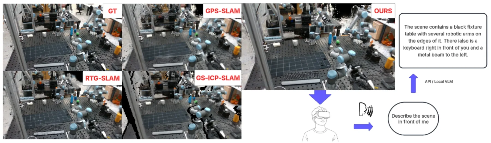
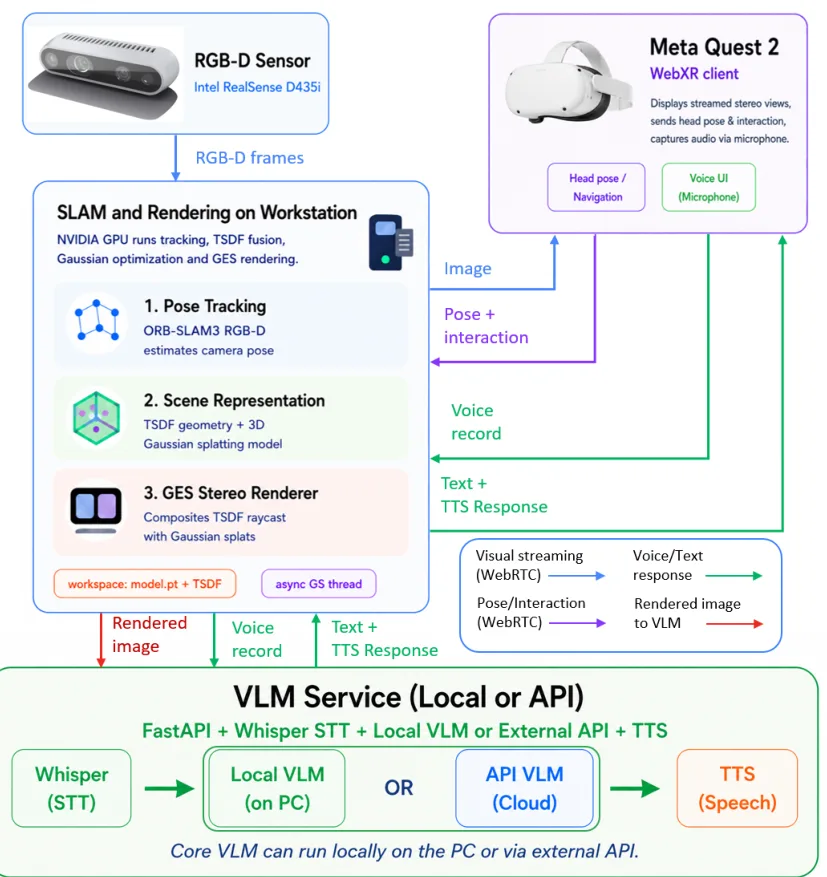
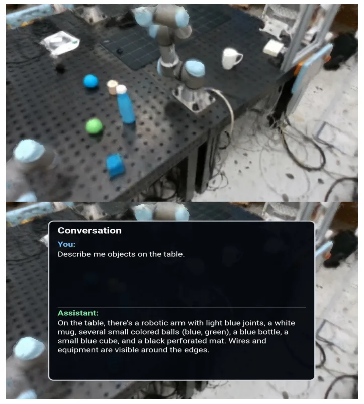
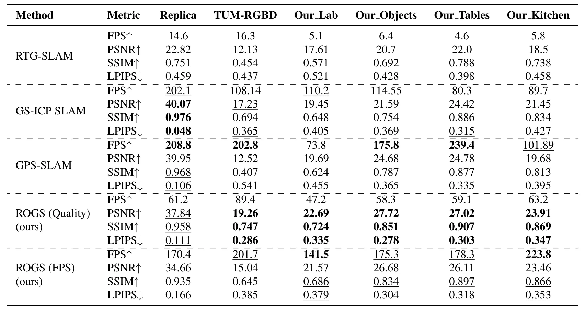

AnythingReality：面向开放词汇 VR 场景探索的鲁棒在线高斯泼溅 SLAMAnythingReality: Robust Online Gaussian Splatting SLAM for Open-Vocabulary VR Scene Exploration
直接命中在线 3DGS-SLAM、真实 RGB-D、实时重建和语义地图交互，系统完整且给出画质与速度指标；但结果依赖自建数据，仍需核查轨迹精度、回环后地图一致性及动态场景鲁棒性。
一句话工作总结
把 ORB-SLAM3、在线 3DGS、VR 浏览与开放词汇语义交互接成实时系统，重点解决真实噪声输入下的增量重建。
摘要
本文提出一套集鲁棒在线 3D Gaussian Splatting、实时 VR 探索与语音驱动视觉语言模型交互于一体的架构。系统不依赖干净深度或外部位姿，而是将 ORB-SLAM3 位姿估计与面向真实噪声数据的在线 Gaussian 重建结合；VR 管线支持沉浸式浏览增量重建，语义模块可转写语音命令、生成场景描述并记录兴趣点。相较在线 Gaussian Splatting 基线，该方法在自建数据和 TUM-RGBD 上改善 PSNR、SSIM 与 LPIPS，并通过不同质量—速度配置保持相当或更高帧率；VLM 物体识别率达到 88%。
We present a novel integrated architecture for robust online 3D Gaussian splatting, real-time VR exploration, and speech-driven Vision-Language-Model interaction. Unlike methods assuming clean depth or external poses, our system combines ORB-SLAM3-based pose estimation with online Gaussian reconstruction for noisy real-world data. A VR pipeline enables immersive exploration of incremental reconstructions; a semantic module transcribes voice commands, generates scene descriptions, and records points of interest. Against state-of-the-art online Gaussian splatting methods, we improve image quality on our dataset (+14.5% PSNR, +8.6% SSIM, -14.3% LPIPS) and TUM-RGBD (+11.7% PSNR, +7.8% SSIM, -21.6% LPIPS), with comparable or superior frame rates via quality-speed configurations. We achieve an 88% VLM object-recognition rate.
中文解读摘录
- 作者：Timofei Kozlov, Dmitrii Maliukov, Andrey Marchenko, Miguel Altamirano Cabrera, Dzmitry Tsetserukou
- 价值判断：把 ORB-SLAM3 位姿、在线 Gaussian 重建、VR 浏览和 VLM 语义交互接成端到端实时系统；与只依赖干净深度或外部位姿的 3DGS 管线相比，更贴近真实机器人采集。
- 关键结果：在自建数据上报告 +14.5% PSNR、+8.6% SSIM、-14.3% LPIPS；TUM-RGBD 上为 +11.7%、+7.8%、-21.6%，VLM 物体识别率 88%。
- 后续核查：轨迹 ATE/RPE、回环后的 Gaussian 地图一致性、动态对象处理，以及与主流 3DGS-SLAM 在同等硬件上的吞吐对比。
- 链接：arXiv · PDF
图表/页面预览
{kind=link}

{kind=link}

{kind=link}

{kind=link}
